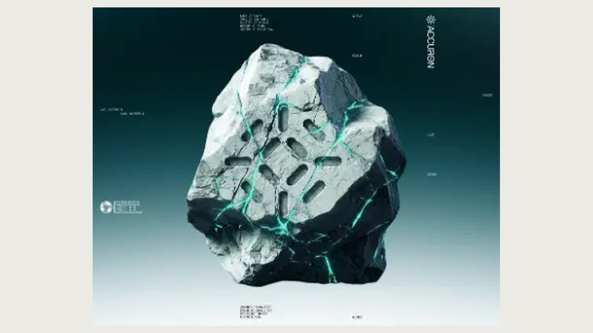
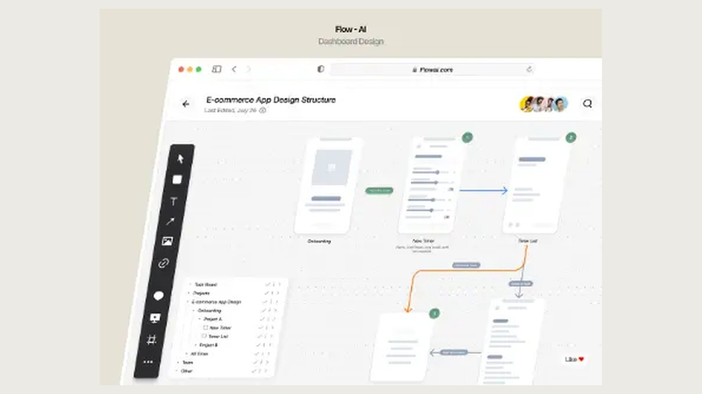

01
基础视觉风格 · refined-minimalism
精炼极简
Refined Minimalism
以严格层级、充足留白和少量高价值元素表达清晰与可信，不依赖装饰制造所谓高级感。
它不是什么不是空白越多越好，也不是把所有内容缩成浅灰小字。


识别信号
- 单一视觉主次
- 大面积有效留白
- 一到两个克制强调色
排除信号
- 无目的的大空白
- 低对比到难以阅读
七类视觉语法
- 字体
- 中性无衬线配少量高识别标题字
- 色彩
- 白、暖白或浅灰为主，单一品牌强调色
- 布局
- 稳定网格、短路径和明确首要动作
- 形状
- 简洁矩形与适度圆角
- 材质
- 哑光、轻边框、极浅阴影
- 图像
- 真实产品界面或克制摄影
- 动效
- 只在状态变化和页面进入时轻动
近义词边界与组合规则
容易混淆
editorial-swiss精炼极简优先减少元素，瑞士编辑式更强调可见网格与字体构成。neumorphism精炼极简靠层级和留白，新拟态靠同色浮雕材质。
适合 / 避免
适合：SaaS 首屏、生产力工具、专业服务
避免：需要强烈娱乐刺激的活动页
可组合：bento-grid、dark-mode、productivity-saas
MODEL PROMPT
采用精炼极简：单一视觉主次；大面积有效留白；一到两个克制强调色。稳定网格、短路径和明确首要动作。
避免无目的的大空白、低对比到难以阅读。